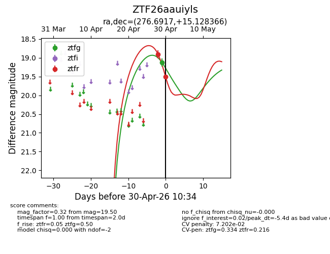
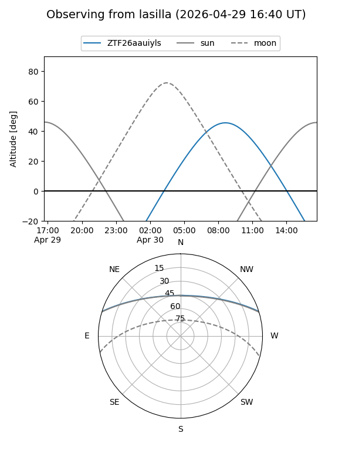
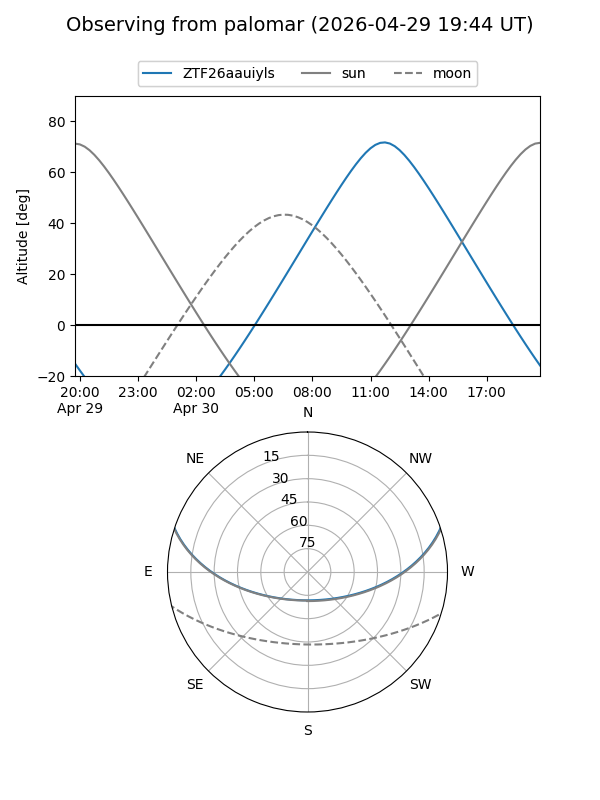

ZTF26aauiyls
Target ZTF26aauiyls at 2026-04-30 10:39
Aliases and brokers:
FINK: link
Lasair: link
ALeRCE: link
alt names
ZTF26aauiyls (ztf,fink_ztf)
Coordinates:
equatorial (ra, dec) = 276.6917,+15.12837
equatorial (HMS+DMS) = 18:26:46.01,+15:07:42.12
galactic (l, b) = (43.8410,+12.19914)
Flags:
likely cv
Photometry:
last ztfg=19.13, ztfr=19.50
1 ztfg, 2 ztfr detections
Lightcurve

Visibility


Additional plots